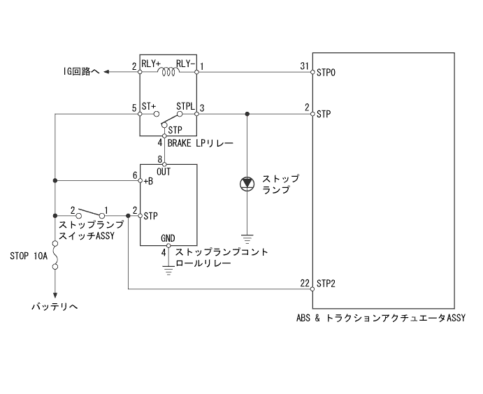
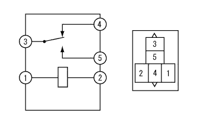
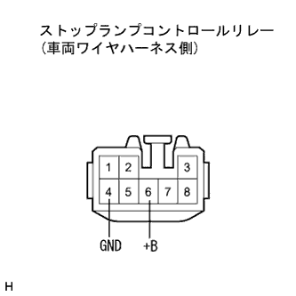
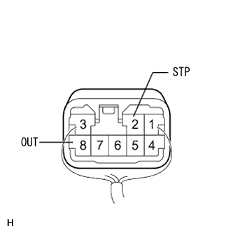
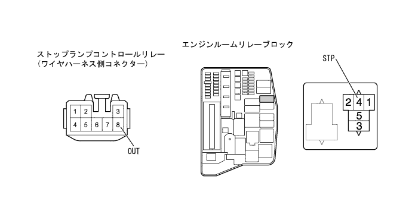
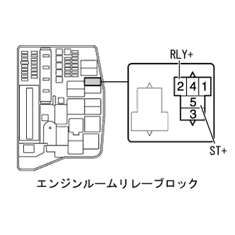
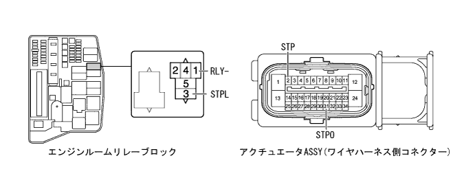
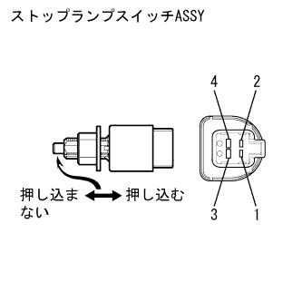
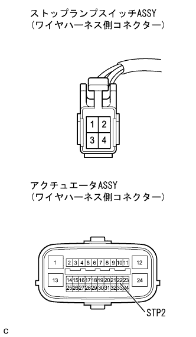

DTC C1380/64 Stop Light Drive Relay Circuit Malfunction |
| DTC No. | DTC Detection Condition | DTC Output Related Items |
|---|---|---|
| C1380/64 |
|
|

| Step 1 | Recheck DTC (C1249/49) |
Check the output status of DTC C1249/49. (see )
| Result | Proceed to |
|---|---|
| C1249/49 is not output | A |
| C1249/49 is output | B |
|
| ||||
| A | |
| Step 2 | Inspect BRAKE LP Relay |
Remove the BRAKE LP relay from the engine room relay block.
Check that the relay case and terminals are not deformed or corroded.
 |
Using SST (Toyota electrical tester), measure the resistance between each terminal of the relay.
| Tester Connection | Condition | Standard |
|---|---|---|
| 1(RLY-) - 2(RLY+) | Always | Approximately 111 Ω |
| 5(ST+) - 3(STPL) | When battery voltage is not applied between terminals 1 (RLY-) - 2 (RLY+) | 10k Ω or higher |
| 4(STP) - 3(STPL) | Below 1 Ω | |
| 5(ST+) - 3(STPL) | When battery voltage is applied between terminals 1 (RLY-) and 2 (RLY+) | Below 1 Ω |
|
| ||||
| OK | |
| Step 3 | Inspect Stop Light Control Relay Assembly |
Input/Output Operation Inspection
 |
Disconnect the stop light control relay connector.
Using SST (Toyota electrical tester), measure the voltage between each terminal of the vehicle side wire harness connector and body ground.
| Tester Connection | Condition | Standard |
|---|---|---|
| 6 (+B) - Body ground | Always | 11 to 14V |
Using SST (Toyota electrical tester), measure the resistance between each terminal of the vehicle side wire harness connector and body ground.
| Tester Connection | Condition | Standard |
|---|---|---|
| 4 (GND) - Body ground | Always | Below 1 Ω |
Connect the stop light control relay connector.
 |
Using SST (Toyota electrical tester), measure the voltage between each connector terminal and body ground.
| Tester Connection | Condition | Standard |
|---|---|---|
| 2 (STP) - Body ground | Brake pedal not depressed | Below 1V |
| Brake pedal depressed | 8 to 16V | |
| 8 (OUT) - Body ground | Brake pedal not depressed | Below 1V |
| Brake pedal depressed | 8 to 16V |
| Result | Proceed to |
|---|---|
| OK | A |
| NG (+B, GND, STP terminals) | B |
| NG (OUT terminal) | C |
|
| ||||
|
| ||||
| A | |
| Step 4 | Inspect Wire Harness and Connector (Stop Light Control Relay - BRAKE LP Relay) |
Disconnect the stop light control relay connector.
Remove the BRAKE LP relay from the engine room relay block.
Check that the connector case and terminals are not deformed or corroded.
Using SST (Toyota electrical tester), measure the resistance of the wire harness side connectors between the stop light control relay and the engine room relay block.

| Tester Connection | Condition | Standard |
|---|---|---|
| 8(OUT) - 4(STP) | Always | Below 1 Ω |
Using SST (Toyota electrical tester), measure the resistance between the stop light control relay and body ground.
| Tester Connection | Condition | Standard |
|---|---|---|
| 4 (STP) - Body ground | Always | 10k Ω or higher |
|
| ||||
| OK | |
| Step 5 | Inspect Wire Harness and Connector (Engine Room Relay Block - Battery) |
 |
Using SST (Toyota electrical tester), measure the voltage between the engine room relay block and body ground.
| Tester Connection | Condition | Standard |
|---|---|---|
| 2 (RLY+) - Body ground | IG ON | 11 to 14V |
| 5 (ST+) - Body ground | Always | 11 to 14V |
|
| ||||
| OK | |
| Step 6 | Inspect Wire Harness and Connector (Engine Room Relay Block - Actuator Assembly) |
Disconnect the actuator assembly connector.
Disconnect the stop light connector.
Check that the connector case and terminals are not deformed or corroded.
Using SST (Toyota electrical tester), measure the resistance of the wire harness side connectors between the engine room relay block and the actuator assembly

| Tester Connection | Condition | Standard |
|---|---|---|
| 1(RLY-) - 31(STP0) | Always | Below 1 Ω |
| 3(STPL) - 2(STP) |
Using SST (Toyota electrical tester), measure the resistance between the engine room relay block and body ground.
| Tester Connection | Condition | Standard |
|---|---|---|
| 1 (RLY-) - Body ground | Always | 10k Ω or higher |
| 3 (STPL) - Body ground |
|
| ||||
| OK | |
| Step 7 | Recheck DTC |
Clear the DTCs. (see )
With the brake pedal not operated, turn the stop light drive relay ON using the Active Test, wait for 2 seconds or more, and check the DTC output. (see )
With the stop light drive relay OFF, depress and hold the brake pedal for 5 seconds, release the brake pedal and wait for 5 seconds, then check the DTCs again. (see )
| Result | Proceed to |
|---|---|
| OK | A |
| Stop light drive relay system malfunction code is output again by relay operation | B |
| Stop light drive relay system malfunction code is output again by brake pedal operation | C |
|
| ||||
|
| ||||
| A | ||
| ||
| Step 8 | Inspect Stop Light Switch Assembly |
 |
Turn the ignition switch OFF and disconnect the stop light switch assembly connector.
Using SST (Toyota electrical tester), measure the resistance between the terminals of the stop light switch assembly.
| Tester Connection | Condition | Standard |
|---|---|---|
| 1 - 2 | Shaft not pushed in | Below 1 Ω |
| Shaft pushed in | 10k Ω or higher |
|
| ||||
| OK | |
| Step 9 | Inspect Wire Harness and Connector (Stop Light Switch Assembly - Actuator Assembly) |
Check that the BRAKE LP relay is securely installed in the engine room relay block.
Disconnect the actuator assembly and stop light switch assembly connectors.
Check that the connector case and terminals are free of deformation and corrosion.
 |
Using SST (Toyota electrical tester), measure the voltage between the stop light switch assembly wire harness side connector and body ground.
| Tester Connection | Condition | Standard |
|---|---|---|
| 2 - Body ground | Always | 11 to 14V |
Using SST (Toyota electrical tester), measure the resistance of the wire harness side connectors between the stop light switch assembly and actuator assembly, and the resistance between the wire harness side connectors of the stop light switch assembly and actuator assembly and body ground.
| Tester Connection | Condition | Standard |
|---|---|---|
| 1 - 22(STP2) | Always | Below 1 Ω |
| 22 (STP2) - Body ground | 10k Ω or higher |
|
| ||||
| OK | ||
| ||